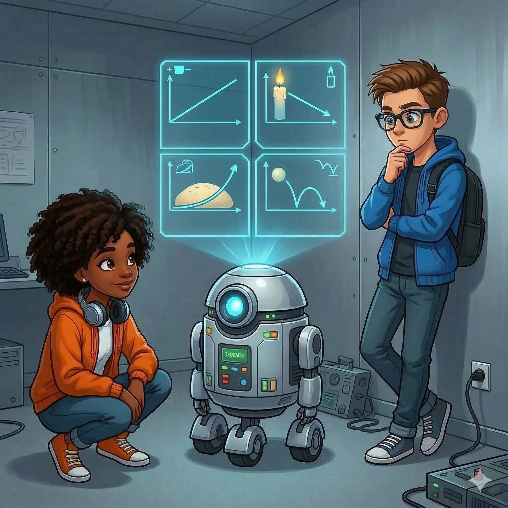

Ist alles linear?

Ben lehnt sich nachdenklich an die Wand. „Okay. Das mit der Gerade leuchtet mir ein. Aber ist das immer so? Hängt wirklich alles linear zusammen?"
Sarah: „Na ja... ich hab gehört, dass sich eine Krankheit 'exponentiell' schnell verbreiten kann. Also, dass der Zusammenhang zwischen der Zeit und den erkrankten Personen exponentiell ist. Am Anfang verbreitet sich die Krankheit langsam und dann immer schneller. Das ist ja gerade nicht linear."
Beep: „Guter Punkt. Nicht jeder Zusammenhang ist linear. Linear bedeutet: Steigt die Eingabe gleichmäßig, steigt die Ausgabe auch gleichmäßig. Das ergibt eine gerade Linie. Ist das nicht der Fall, wäre eine Gerade das falsche Modell."
Ben: „Wie erkennt man das?"
Beep: „Man überlegt, ob die Veränderung gleichmäßig ist oder eben nicht." Er öffnet ein Hologramm. „Hier sind ein paar Alltagsbeispiele. Entscheidet selbst."